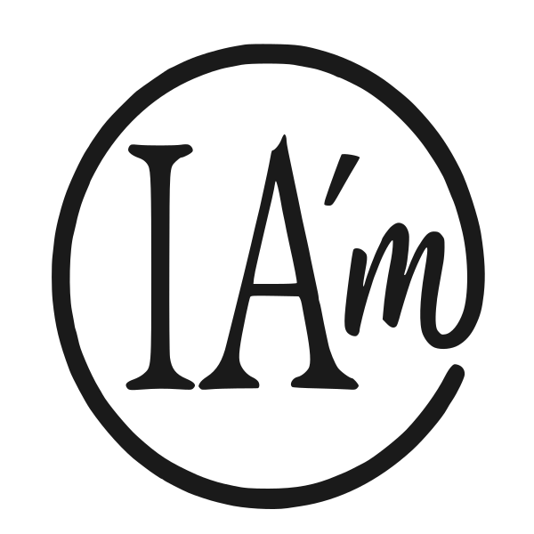

Si vous souhaitez parler d'IA'm autour de vous, voici de quoi le faire simplement : le logo, quelques formules prêtes à coller, et le lien vers le site. À utiliser librement, dans la forme qui vous convient.
Disponible en SVG (vectoriel, idéal pour le web et l'impression) et en PNG (pour un usage rapide dans un mail ou un document).
Choisissez la formule qui s'adapte au contexte : une signature, un paragraphe court, ou une présentation plus complète.
IA'm est un label volontaire de transparence pour la co-création humain-IA, déposé à l'INPI (classe 41) et publié sous licence Creative Commons BY-NC 4.0. Il propose trois niveaux de déclaration — Assisté, Initié, Généré — fondés sur un seul critère : qui porte la décision créative.
Le créateur appose lui-même le badge sur sa production. Pas de certification par un tiers, pas de détection algorithmique, pas d'inscription. Une grammaire simple, ouverte, à la disposition de toute personne ou institution qui souhaite s'en emparer.
À utiliser dans un mail, un message, ou une introduction écrite. La version neutre se colle telle quelle. La version personnelle invite à reformuler en fonction de votre interlocuteur.
Toujours diriger vers le site officiel — pas le repo GitHub, pas une page intermédiaire.
{kind=link}
{kind=link}